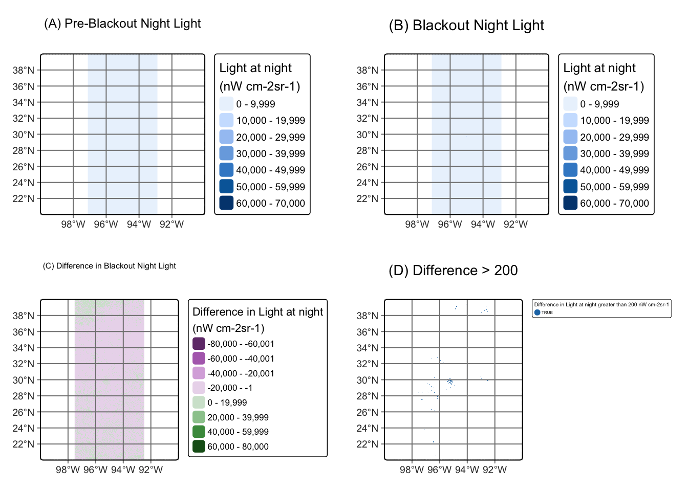
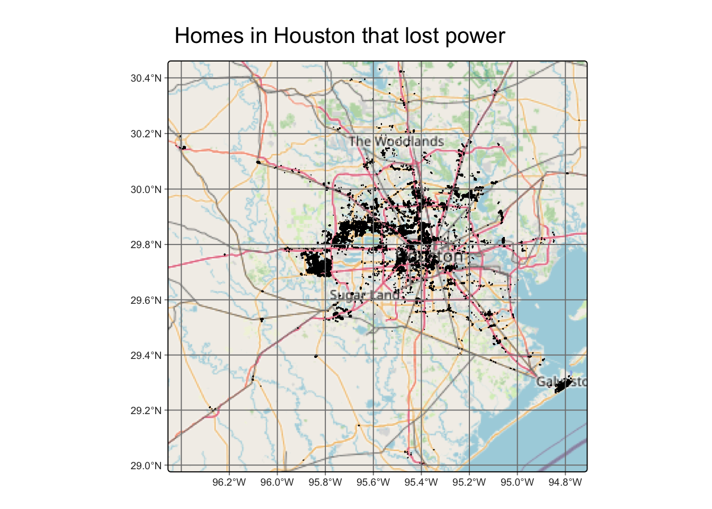
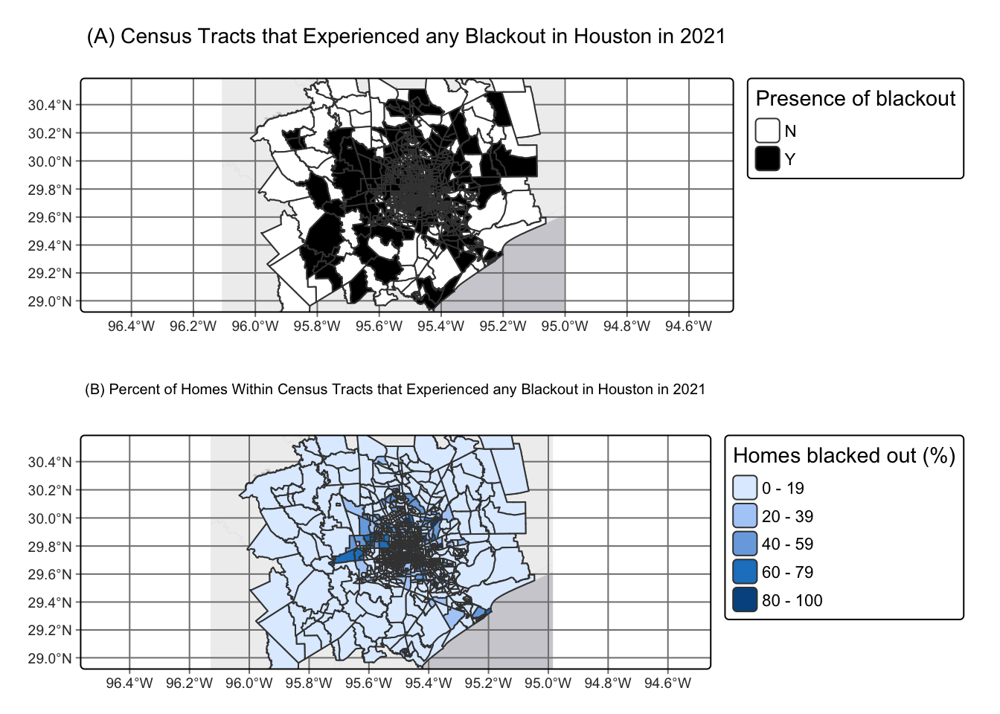
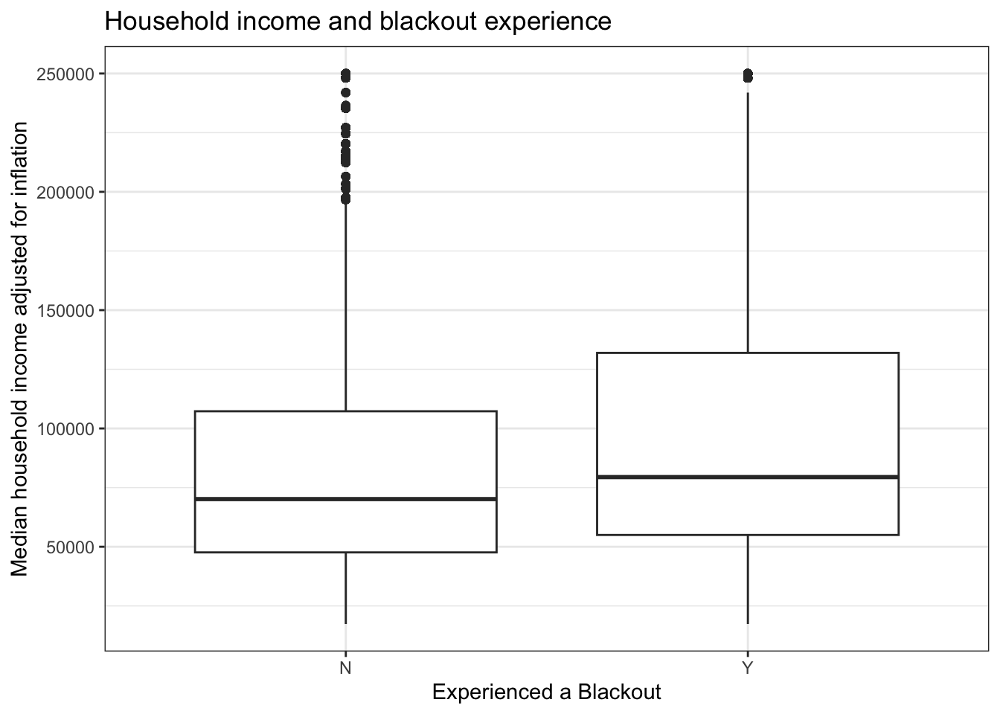

library(tidyverse) # data wrangling
library(sf) # for spatial data
library(tmap) # for pretty maps
library(here) # file pathing
library(viridisLite) # colors
library(janitor) # data wrangling
library(kableExtra) # pretty table
library(patchwork) # combine plots
library(stars) # rasters
library(terra) # rasters
# load in data
#..........................Night lights..........................
## read_stars for the raster data!
## VIIRS data
# tile 5 date 1
tile5_2.7 <- read_stars(here::here("data","VNP46A1", "VNP46A1.A2021038.h08v05.001.2021039064328.tif"),
quiet = TRUE) # hide the message
# tile 6 date 1
tile6_2.7 <- read_stars(here::here("data",
"VNP46A1",
"VNP46A1.A2021038.h08v06.001.2021039064329.tif"),
quiet = TRUE) # hide the message
# tile 5 date 2
tile5_2.16 <- read_stars(here::here("data","VNP46A1", "VNP46A1.A2021047.h08v05.001.2021048091106.tif"),
quiet = TRUE) # hide the message
# tile 6 date 2
tile6_2.16 <- read_stars(here::here("data","VNP46A1", "VNP46A1.A2021047.h08v06.001.2021048091105.tif"),
quiet = TRUE) # hide the message
#..............................Roads.............................
# roads: gis_osm_roads_free_1.gpkg
road <- st_read(here::here("data", "gis_osm_roads_free_1.gpkg"),
# from homework tip, only load needed data
query = "SELECT * FROM gis_osm_roads_free_1 WHERE fclass='motorway'",
quiet = TRUE) %>% # hide the message
st_make_valid() # valid geo
#.............................Houses.............................
house <- st_read(here::here("data", "gis_osm_buildings_a_free_1.gpkg"),
# use SQL query to only read in data we need (given in the hw instructions)
# The buildings geopackage includes data on many types of buildings;
# we can avoid reading in data we don’t need:
query = "SELECT *
FROM gis_osm_buildings_a_free_1
WHERE (type IS NULL AND name IS NULL)
OR type in ('residential', 'apartments',
'house', 'static_caravan', 'detached')",
quiet = TRUE) %>% # hide the message
st_make_valid() # valid geo
#..........................Socioeconomic.........................
# Socioeconomic: folder ACS_2019_5YR_TRACT_48.gdb is an ArcGIS “file geodatabase”, a multi-file proprietary format that’s roughly analogous to a GeoPackage file
## use st_layers() to explore the contents of the geodatabase, because geodatabases has layers
# st_layers(here::here("data","ACS_2019_5YR_TRACT_48_TEXAS.gdb")) # takes a whole to run, long output, commented out
# important finds: X19_INCOME, TRACT_METADATA_2019, ACS_2019_5YR_TRACT_48_TEXAS
# geography layer
geo_layer <- st_read(here::here("data", "ACS_2019_5YR_TRACT_48_TEXAS.gdb"),
layer = "ACS_2019_5YR_TRACT_48_TEXAS", # specify the layer to read in
quiet = TRUE) %>% # no long message
st_make_valid() %>% # valid geometry
dplyr::select(GEOID_Data, Shape) %>% # keep only needed columns
rename(GEOID = GEOID_Data) # name to match colname in income
# income layer
income <- st_read(here::here("data",
"ACS_2019_5YR_TRACT_48_TEXAS.gdb"),
layer = "X19_INCOME", # specify the layer to read in for income (from exploration)
quiet = TRUE) # no long message
# metadata (colnames)
meta <- st_read(here::here("data", "ACS_2019_5YR_TRACT_48_TEXAS.gdb"),
layer = "TRACT_METADATA_2019", # specify the layer to read in for income (from exploration)
quiet = TRUE) %>%
# only keep metadata related to income
filter(str_detect(Full_Name,
regex("INCOME", ignore_case = TRUE)))Investigating the 2021 Texas Power Crisis
GitHub Repository link: https://github.com/cnordheim-maestas/texas-blackout-analysis.git
0. Setup
read in data
First let’s read in the data from our multiple sources, note the data is in a .gitignore so it cannot be accessed via the reporitory. Please see README for how to access the data.
Explore the data
ALAN explore & wrangle
These are raster files that show the light at night to explore the power outages. There are 2 “tiles” that encompass Houston, so I will combine those tiles to end up with day1 and day2 rasters for the whole Houston area.
A note about the rasters, I used stars to read in the data, so I will use st_mosaic to combine the rasters which are stars objects.
See Section 5.1 for the map comparing pre and during blackout
# day 1 raster: combine tiles 5 and 6 for the 7th
d1_stars <- st_mosaic(tile5_2.7, tile6_2.7)
# day 2 raster: combine tiles 5 and 6 for the 16th
d2_stars <- st_mosaic(tile5_2.16, tile6_2.16)
# check crs
# st_crs(d1_stars) # WGS84
# st_crs(d2_stars) # WGS84roads explore & wrangle
This is a sf dataframe with lines of roads that intersect the Houston metropolitan area. I will do some exploration like looking at the class, whether the geometry is valid, geometry type, and crs.
# road exploration
class(road) # make sure it is an "sf" "data.frame"[1] "sf" "data.frame"unique(st_is_valid(road)) # true[1] TRUEunique(st_geometry_type(road)) # lines[1] LINESTRING
18 Levels: GEOMETRY POINT LINESTRING POLYGON MULTIPOINT ... TRIANGLE# st_crs(road) # check crs: WGS84
# exploratory vis, commented out bc exploratory
# tm_shape(road) +
# tm_basemap("OpenStreetMap") + # orient
# tm_graticules()+ # orient
# tm_lines(col = "blue") + # my layer, make sure it is LINES
# tm_title("Exploratory map of Roads (roads in blue)") # titlehouse explore & wrangle
This is a sf dataframe with polygons of houses in the Houston area. I will do some exploration like looking at the class, whether the geometry is valid, geometry type, and crs.
# house
class(house) # make sure it is an "sf" "data.frame"[1] "sf" "data.frame"colnames(house) # for fun what kind of data do we have here[1] "osm_id" "code" "fclass" "name" "type" "geom" unique(st_is_valid(house)) # true, good[1] TRUEunique(st_geometry_type(house)) # multipolygon[1] MULTIPOLYGON
18 Levels: GEOMETRY POINT LINESTRING POLYGON MULTIPOINT ... TRIANGLE# exploratory vis, commented out bc exploratory
# house_exploratory <- tm_shape(house) +
# tm_basemap("OpenStreetMap") + # orient
# tm_graticules()+ # orient
# tm_polygons(col = "blue") + # my layer, make sure it is polygons
# tm_title("Exploratory map of house (layer in blue)") # title
#
# house_exploratory socioeconomic explore & wrangle
I have 2 data objects that I will need to explore and merge here: geo_layer and income! My overarching goal is to make one sf dataframe with geographic data and income data for each row. I will join on the geo_id.
Next, I need to know what column from the income layer to keep, there are so many! I explored the metadata and determined the column that will help me get at median household income is (after cleaning the formatting of the name): median_family_income_in_the_past_12_months_in_2019_inflation_adjusted_dollars_median_family_income_in_the_past_12_months_in_2019_inflation_adjusted_dollars_families_estimate. I will use that column in the income dataframe, and rename it to something more intuitive like median_income_inflation_adj.
Then, I will make the dataframe spatial again.
# whittle down metadata
meta_whittled <- meta %>% # pipe in metadata df I read in in the beginning
mutate(
full_name_clean = make_clean_names(Full_Name)) %>% # clean the values of the Full_Name df and save to column full_name_clean
filter(str_detect( # filter for a specific value
full_name_clean, # in this column
regex( # this is the value
"median_family_income_in_the_past_12_months_in_2019_inflation_adjusted_dollars_median_family_income_in_the_past_12_months_in_2019_inflation_adjusted_dollars_families_estimate",
ignore_case = TRUE))) # ignore upper vs lower case
# Now make an object with the name of the column with income data to keep
column_to_keep <- meta_whittled$Short_Name
column_to_keep # the column is named B19113e1[1] "B19113e1"# only keep columns of interest in income df
income_filtered <- income %>%
dplyr::select(GEOID,
all_of(column_to_keep)) %>% # keep only the geoid column and column B19113e1 (aka the column to keep)
rename(median_income_inflation_adj = all_of(column_to_keep)) # rename the column
# left join to make socioeconomic (se) df
se <- income_filtered %>%
left_join(geo_layer, by = "GEOID") %>%
relocate(Shape, .after = GEOID) # move geo to after thegeo id
# check the class
class(se) # not spatial![1] "data.frame"# make spatial again
se <- se %>%
st_as_sf() %>% # as sf
st_make_valid() %>% # valid geo
st_transform("EPSG:4326") # to match
class(se) # now spatial![1] "sf" "data.frame"# st_crs(se) # EPSG:4326
# exploratory, commented out
# se_map <- tm_shape(se) +
# tm_basemap("OpenStreetMap") + # orient
# tm_graticules()+ # orient
# tm_polygons(col = "purple") +
# tm_title("Exploratory map of se") # title
# se_map1. Create blackout mask
1.1 difference raster
I want to find the change in night lights intensity caused by the storm. Above in the data exploration and cleaning phase, I made a single raster for each day using st_mosaic. These rasters are called d1_stars (day 1, and in before the blackout) and d2_stars (day 2, and in during the blackout)
To find the change, I will do subtraction: Feb 7 (no blackout aka more light aka day 1) - Feb 16 (blackout aka day 2). I want where the difference is greater than 200, so the values > 200 = TRUE for a blackout.
Then I will reclassify the difference raster, assuming that any location that experienced a drop of more than 200 nW cm-2sr-1 experienced a blackout. So a TRUE is a blackout, a NA is not a blackout.
See Section 5.1 for the map comparing pre and during blackout
# checked same crs in the data exploration and cleaning phase
# check extent (need same extent to do raster math)
st_bbox(d1_stars)xmin ymin xmax ymax
-100 20 -90 40 st_bbox(d2_stars) # yay samexmin ymin xmax ymax
-100 20 -90 40 # lets make a difference raster showing the values of the differences
diff_for_vis <- d1_stars - d2_stars
# subtraction "difference raster" and the boolean TRUE FALSE for > 200
diff_stars <- d1_stars - d2_stars > 200
# set the False (less than 200 difference) to NA
diff_stars[diff_stars==FALSE] <- NA
# # check it out, commented out since it is exploratory
# tm_shape(diff_stars) +
# tm_raster(col.legend = tm_legend(title = "ALAN"))+ # use color legend
# tm_graticules()+ # orienting
# tm_title(text = "UNSCALED diff > 200") # title1.2 vectorize the blackout mask
I want to vectorize this mask, so turn it from a raster into a vector. I will use st_as_sf() to convert from a raster to a vector and then I will fix any invalid geometries with st_make_valid(). I can check validity using st_is_valid.
# vectorize and make valid
diff_v <- st_as_sf(diff_stars) %>% # make it sf
st_make_valid() # ensure valid geo
unique(st_is_valid(diff_v)) # check it is valid[1] TRUE# quick exploration
class(diff_v) # woohoo, its an sf dataframe[1] "sf" "data.frame"# st_crs(diff_v) # "EPSG",4326 still, goodNow we have a vector difference mask!
1.3 crop blackout mask
Nest, we will crop (spatially subset) the blackout mask to the Houston area as defined by the following coordinates: (-96.5, 29), (-96.5, 30.5), (-94.5, 30.5), (-94.5, 29)
Note: st_bbox needs to be converted (vectorized) into layer after
# make a bbox with the min and max from the coordinates
crop_bbox <- st_bbox(c( # set my bbox
xmin = -96.5,
ymin = 29,
xmax = -94.5,
ymax = 30.5),
crs = st_crs(diff_v)) # ensure same crs
# check the class of the bbox
class(crop_bbox) # it's bbox[1] "bbox"# convert into a layer
crop <- st_as_sfc(crop_bbox) # gotta make it a layer
class(crop) # yay now an sf[1] "sfc_POLYGON" "sfc" # check extent
st_bbox(crop) # woohoo, matches the coords I wanted xmin ymin xmax ymax
-96.5 29.0 -94.5 30.5 # quick vis, commented out for Ale's sanity
# allows me to visually check it is in the right spot in the world
# tm_shape(crop) +
# tm_borders(col = "red")+ # use color legend
# tm_graticules()+ # orienting
# tm_title(text = "crop") # title
## now crop the actual blackout mask
# gonna use brackets to subset
diff_crop <- diff_v[crop, ] # keep all rows that spatially intersect with the crop
# check extent
st_bbox(diff_crop) # sweet xmin ymin xmax ymax
-96.5000 29.0000 -94.7375 30.5000 # quick vis, commented out for Ale's sanity
# also allows me to visually check it is in the right spot in the world
# tm_shape(diff_crop) +
# tm_polygons(col= "red") +
# tm_basemap("OpenStreetMap") +
# tm_graticules() +
# tm_title("cropped blackout mask quick vis") # yay in Houston1.4 re-project cropped dataset
Now let’s re-project the cropped blackout dataset to EPSG:3083 (NAD83 / Texas Centric Albers Equal Area). We can use st_transform for this.
# use st_transform
diff_crop <- diff_crop %>%
st_transform("EPSG:3083")
# double check it changed the crs
#st_crs(diff_crop) # EPSG:3083 yay!2. Exclude highways from the cropped blackout mask
exclude any locations within 200 meters of all highways in the Houston area
2.1 buffer close to highway
I need to identify areas within 200m of all highways, so I will check my crs, ensure the units is meters, and then make a buffer using st_buffer with a distance of 200.
# set to same crs "EPSG:3083" as the diff_crop
road_trans <- road %>%
st_transform("EPSG:3083") # transform to a projection with meters
# check units
st_crs(road_trans)$units # in meters![1] "m"# create
road_buffer_200m <- st_buffer(road_trans, dist = 200) # Create 200 m buffer around roads
# quick viz
# tm_shape(road_buffer_200m) +
# tm_polygons(col= "red") +
# tm_basemap("OpenStreetMap") +
# tm_graticules() +
# tm_title("buffer") # yay in Houston2.2 St_union the buffer
Next I will st_union to combine all the geometries created when making a buffer into one nice polygon buffer. This makes for one continuous polygon buffer.
# take overlapping geometries in the building of the buffer into one nice polygon
road_buffer_200m <- st_union(road_buffer_200m)2.2 outside the buffer
Now I find areas that experienced blackouts that are ALSO further than 200m from a highway
We want things OUTSIDE the buffer layer, so use st_difference, this will be like st_intersection which will return the areas that do not intersect. I will call this no_highway and will make it a polygon of the area of the difference_crop (aka the blackout areas) that is not in the buffer around the highways.
# quick checks
# unique(st_is_valid(diff_crop)) # TRUE
# st_crs(diff_crop) # EPSG:3083
# st_crs(road_buffer_200m) # EPSG:3083
# outside the buffer
no_highway <- st_difference(diff_crop, road_buffer_200m) # creates polygon of the area of x not in y3. Identify the number of homes likely impacted by blackouts
I will now dentify homes from the house df that overlap with areas that experienced blackouts. I will use st_filter to create a dataframe of the homes that did experience a blackout using the .predicate of st_within.
Then, using process of elimination, I will do some old fashioned wrangling to get the homes not in the blackout area, by first making a key of id’s of homes wit the blackout, and filtering out those form the inital houses dataframe. I will add a column to each dataframe specifying blackout Y or N.
Next, I will combine the 2 dataframes using rbind, so I end up with one spatially enabled dataframe and a Y/N column of whether the house experienced a blackout.
See section 5.2 for map of homes that experienced a blackout
# check crs, match most previous one (EPSG:3083)
#st_crs(house) #WGS84
# doesnt match, transform the crs
house_trans <- house %>%
st_transform("EPSG:3083") %>%
st_make_valid()
#st_crs(house_trans) # EPSG:3083
#st_crs(no_highway) # EPSG:3083
# homes in the blackout area
homes_in_blackout <- st_filter(house_trans, no_highway, .predicate = st_within) %>%
mutate(blackout = "Y") # column saying this home did experience a blackout
nrow(homes_in_blackout) # 138,404[1] 138404unique(st_is_valid(homes_in_blackout)) # TRUE[1] TRUE# blackout home id's for filtering
blackout_home_ids <- unique(homes_in_blackout$osm_id)
# homes not affected will be the rest of the homes
homes_not_affected <- house_trans %>%
filter(!osm_id %in% blackout_home_ids) %>%
mutate(blackout = "N") # column saying this home did not experience a blackout
nrow(homes_not_affected) # 327054[1] 337537# now let's make one megadataframe with all homes in Houston area that are not within 200m of a highway and whether they were in blackout y or n
# i will use the good ol reliable bind_rows
homes_blackout_yn <- bind_rows(homes_in_blackout, homes_not_affected)
# exploratory vis
# tmap_mode("view")
# m1 <- tm_shape(homes_in_blackout) +
# tm_polygons(col = "black") +
# tm_basemap("OpenStreetMap") + # orient
# tm_graticules()+ # orient
# tm_title("houses in blackout") # title
# m1
# tmap_arrange(house_exploratory, m1, nrow = 2)4. Identify the census tracts likely impacted by blackout
4.1 join socioecon data with blackout houses data
Join socioeconomic with houses
Next we need to join the building data and socioecon data using st_within to ensure we know which houses in the socioecon are impacted by blackout.
# check and ensure crs
se <- se %>%
st_transform("EPSG:3083") %>% # correct crs
st_make_valid() # valid geometry
# first let's pull all se data for all the homes into one df
homes_allinfo <- st_join(homes_blackout_yn, se, # join the two
join = st_within, left = TRUE) #if it is within, then keep it4.3 summarize census tracts that lost power
See section 5.3 for the final map
census_lvl <- homes_allinfo %>%
st_drop_geometry() %>% # for wrangling
filter(!is.na(GEOID)) %>%
group_by(GEOID) %>%
summarize(
n_homes = n(), # how many homes in the tract
n_blackout = sum(blackout == "Y", na.rm = TRUE), # how many homes in the tract had blackout
pct_blackout = (n_blackout / n_homes * 100), # pct of blacked out homes
blackout_yn = if_else(n_blackout > 0, "Y", "N"), # yes or no for vis
.groups = "drop")
# now let's pull the data back into the the se df
census_lvl_spatial <- left_join(se, census_lvl, by = "GEOID") %>%
filter(!is.na(n_homes)) # only keep census blocks with homes in Houston
# Great now we are ready to use this dataframe for the vis in 5.34.3 summarize median income in blackout vs not
Now we do data wrangling to summarize median income by the census tract.
values_only <- homes_allinfo %>%
st_drop_geometry() # dont need geometry for this
# data exploration
# let's look at the average income in blackout vs not
summary_stat <- values_only %>%
filter(!is.na(median_income_inflation_adj)) %>%
group_by(blackout) %>% # group by whether a blackout or not
summarize(
ave_median_income = mean(median_income_inflation_adj)) # grab the mean for a quick peek
#summary_stat # higher income in blackout areasNext I will build a plot comparing the distributions of median household income for census tracts that did and did not experience blackouts. A boxplot will nicely show all of the values of the median household income, and allow to compare across blackout yes or no.
See section 5.4 for the final boxplot
5. Final Outputs (Grade these maps and plots!)
5.1 Map comparing pre balckout and blackout
Here is a set of maps comparing night light intensities before and after the first two storms. Here I will do 4 maps, one of the night light before the black out, one after, then one showing which areas had a difference greater than 200 nW cm-2sr-1.
m1 <- tm_shape(d1_stars) +
tm_raster(col.legend = tm_legend(title = "Light at night\n(nW cm-2sr-1)"))+ # use color legend
tm_graticules()+ # orienting
tm_title(text = "(A) Pre-Blackout Night Light") # title
m2 <- tm_shape(d2_stars) +
tm_raster(col.legend = tm_legend(title = "Light at night\n(nW cm-2sr-1)"))+ # use color legend
tm_graticules()+ # orienting
tm_title(text = "(B) Blackout Night Light") # title
m3 <- tm_shape(diff_for_vis) +
tm_raster(col.legend = tm_legend(title = "Difference in Light at night\n(nW cm-2sr-1)"))+ # use color legend
tm_graticules()+ # orienting
tm_title(text = "(C) Difference in Blackout Night Light") # title
# check it out, commented out since it is exploratory
m4 <- tm_shape(diff_stars) +
tm_raster(col.legend = tm_legend(title = "Difference in Light at night greater than 200 nW cm-2sr-1")) +
tm_graticules()+ # orienting
tm_title(text = "(D) Difference > 200") # title
map_set_nightlight_comparison <- tmap_arrange(m1, m2, m3, m4, ncol = 2)
map_set_nightlight_comparison
# save the final figure
# tmap_save(map_set_nightlight_comparison, filename = "figs/nightlight_comparison.png", width = 8, height = 6, units = "in", dpi = 300)5.2 Homes that lost power
a map of the homes in Houston that lost power (map)
m_homes_lostpower <- tm_shape(homes_in_blackout) +
tm_polygons(col = "black") +
tm_basemap("OpenStreetMap") + # orient
tm_graticules()+ # orient
tm_title("Homes in Houston that lost power") # title
m_homes_lostpower
# save plot
# tmap_save(m_homes_lostpower , filename = "figs/m_homes_lostpower.png", width = 8, height = 6, units = "in", dpi = 300)an estimate of the number of homes in Houston that lost power (number)
ANSWER: 138,404
nrow(homes_in_blackout) # 138,404[1] 1384045.3 Census Blackout Map
a map of the census tracts in Houston that lost power
map_census <- tm_basemap("Esri.WorldGrayCanvas") +
tm_graticules() +
tm_shape(census_lvl_spatial, bbox = st_bbox(homes_blackout_yn)) +
tm_borders(col = "grey40") +
tm_polygons(
fill = "blackout_yn",
fill.scale = tm_scale(values = c("white", "black")),
fill.legend = tm_legend(
title = "Presence of blackout",
position = tm_pos_out("right")
)) +
tm_title("(A) Census Tracts that Experienced any Blackout in Houston in 2021")
map_census_pct <- tm_basemap("Esri.WorldGrayCanvas") +
tm_graticules() +
tm_shape(census_lvl_spatial, bbox = st_bbox(homes_blackout_yn)) +
tm_borders(col = "grey40") +
tm_polygons(
fill = "pct_blackout",
fill.legend = tm_legend(
title = "Homes blacked out (%)",
position = tm_pos_out("right")
)) +
tm_title("(B) Percent of Homes Within Census Tracts that Experienced any Blackout in Houston in 2021")
combined_census <- tmap_arrange(map_census, map_census_pct,
ncol = 1)
# save plot
# tmap_save(combined_census,filename = "figs/combined_census.png", width = 8, height = 6, units = "in", dpi = 300)
combined_census
5.4 Income boxplot
a plot comparing the distributions of median household income for census tracts that did and did not experience blackouts
income_blackout_fig <-
values_only %>% # use the df with just the values, no need for geo
filter(!is.na(median_income_inflation_adj)) %>% # remove NA
ggplot(aes(x = blackout, # blackout yes or no on x
y = median_income_inflation_adj)) + # income on y
geom_boxplot() + # make it a boxplot
labs(
x = "Experienced a Blackout", # x axis title
y = "Median household income adjusted for inflation", # y axis title
title = "Household income and blackout experience") + # overall title
theme_bw() # clean theme
income_blackout_fig
# save it
# ggsave(
# filename = "figs/census_blackout_fig_combined.png",
# plot = income_blackout_fig,width = 8, height = 6,dpi = 300)5.5 Written Reflection
a brief reflection (approx. 100 words) summarizing your results and discussing any limitations to this study
Here, I investigated a blackout in Houston, Texas in 2021, through the lens of the geographical distribution of the blackout and potential influences of socioeconomic indicators, specifically income. Geographically, the areas that experienced a blackout are clumped in the center of the city, while the homes on the outskirts of the city experienced lass blackouts. Interestingly, this storm did not discriminate based on income; there is no difference in the income between those who experienced blackouts and those that did. Some limitations of the study are that first, we excluded homes near a highway. Additionally, the satellite data where we got the light at night may have clouds, which can disrupt the light data.